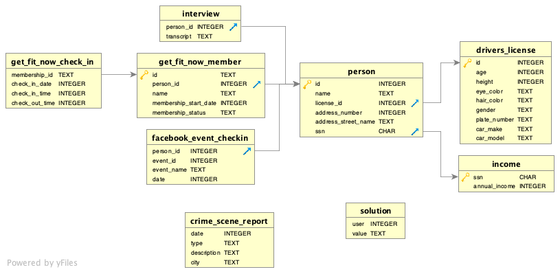

¡Ha ocurrido un asesinato en Ciudad SQL! El misterio del asesinato SQL está diseñado tanto como una lección autodidacta para aprender conceptos y comandos de SQL como un juego entretenido para que usuarios con experiencia resuelvan un intrigante crimen.
Guía de SQL para principiantes
Si ya te sientes cómodo con SQL, puedes saltarte estas explicaciones y poner a prueba tus habilidades. A continuación presentamos algunos conceptos básicos de SQL y lo necesario para resolver el asesinato. Si quieres una introducción más completa a SQL, prueba Select Star SQL.
Se ha cometido un crimen y el detective necesita tu ayuda. Te entregó el informe de la escena del crimen, pero de algún modo lo perdiste. Recuerdas vagamente que fue un asesinato ocurrido en algún momento del 15 de enero de 2018 en SQL City. Empieza por recuperar el informe correspondiente de la base de datos del departamento de policía.
Todas las pistas de este misterio están ocultas en una enorme base de datos, y tendrás que usar SQL para recorrer esta vasta red de información. El primer paso para resolver el misterio es recuperar el informe correspondiente de la base de datos del departamento de policía. A continuación explicaremos, a grandes rasgos, los comandos que necesitas conocer; cuando quieras, puedes adaptar los ejemplos y crear tus propias consultas SQL para buscar pistas. Puedes ejecutar cualquier consulta SQL en cualquiera de los cuadros de código, sin importar qué contenido tuviera inicialmente.
Algunas definiciones
¿Qué es SQL?
SQL, sigla de «lenguaje de consulta estructurado» (Structured Query Language), permite interactuar con bases de datos relacionales y sus tablas para obtener información específica y significativa.
Espera, ¿qué es una base de datos relacional?
No existe una única definición para el término base de datos. En general, las bases de datos son sistemas para administrar información. Los datos pueden tener distintos grados de estructura. Cuanto más estructurados estén, más fácil será que las personas y las computadoras trabajen con ellos de manera eficiente.
Las bases de datos relacionales probablemente sean el tipo de base de datos más conocido. En esencia, están formadas por tablas, muy parecidas a las hojas de cálculo. Cada columna tiene un nombre y un tipo de dato (texto, número, etc.), y cada fila representa un caso concreto de aquello sobre lo que trata la tabla. El carácter «relacional» se refiere a las reglas específicas para conectar datos de distintas tablas.
¿Qué es un DER?
Un DER (diagrama de entidad-relación) es una representación visual de las relaciones entre las tablas relevantes de una base de datos. A continuación puedes ver el DER de nuestra base de datos del misterio. El diagrama muestra que cada tabla tiene un nombre (en negrita, en la parte superior del recuadro), una lista de nombres de columnas (a la izquierda) y sus tipos de datos correspondientes (a la derecha, en mayúsculas). El DER también incluye iconos de llaves doradas y flechas azules y grises. Una llave dorada indica que la columna es la clave primaria de la tabla correspondiente, y una flecha azul indica que es la clave foránea.
- Clave primaria:
- identificador único de cada fila de una tabla.
- Clave externa:
- permite relacionar los datos de una tabla con los de otra.
Aquí está el DER de nuestra base de datos:

¿Qué es una consulta?
Si examinaras los datos de esta base de datos, verías que las tablas son enormes. Hay tantos datos que no es posible revisarlas fila por fila para encontrar la información que necesitamos. ¿Qué podemos hacer?
Aquí es donde entran en juego las consultas: son instrucciones que construimos para obtener datos de la base de datos. Por lo general, las consultas se parecen al lenguaje natural. Probemos algunas en nuestra base de datos. Para cada cuadro de abajo, haz clic en «Ejecutar» para ejecutar la consulta. Puedes editarla aquí mismo en la página y seguir explorando. (Ten en cuenta que los comandos SQL no distinguen entre mayúsculas y minúsculas, aunque por convención se escriben en mayúsculas para facilitar su lectura. También puedes usar saltos de línea y espacios para dar formato al comando. La mayoría de los sistemas de bases de datos exigen que las consultas terminen con punto y coma («;»), aunque el sistema de esta página es más flexible).
¿Qué elementos tiene una consulta SQL?
Una consulta SQL puede contener:
- Palabras clave SQL (como SELECT y FROM)
- Nombres de columnas (como la columna name)
- Nombres de tablas (como la tabla person)
- Caracteres comodín (como
%) - Funciones
- Criterios de filtrado específicos
- Etcétera
Palabras clave SQL
Las palabras clave SQL especifican acciones en las consultas. No distinguen entre mayúsculas y minúsculas, pero recomendamos escribirlas en mayúsculas para diferenciarlas fácilmente del resto de la consulta. Algunas de las más usadas son:
SELECT
SELECT permite obtener de la base de datos los datos de columnas específicas:
- * (asterisco): se usa después de SELECT para obtener todas las columnas de la tabla;
- column_name(s): para seleccionar columnas específicas, escribe sus nombres después de SELECT y sepáralos con comas.
FROM
FROM permite especificar qué tabla(s) nos interesan. Para seleccionar varias tablas, enumera sus nombres y sepáralos con comas. (Pero, hasta que aprendas la palabra clave JOIN, quizá te sorprenda el resultado. Ya llegaremos a eso).
WHERE
La cláusula WHERE se usa para filtrar los resultados según criterios específicos.
Probemos algunas de estas cosas.
La palabra clave AND permite combinar varios criterios de filtrado para que los resultados cumplan todos y cada uno de ellos. (También existe OR, que devuelve las filas que coinciden con cualquiera de los criterios).
Si todavía no encontraste el informe correcto, haz clic en «Mostrar solución» arriba y reemplaza el contenido del cuadro por el comando revelado. (Omite el /* inicial). Si encontraste una consulta que muestra un solo informe en lugar de varios de la misma ciudad y tipo, ¡felicitaciones! No prestes atención a la palabra «Incorrecto»: sabrás si lo resolviste.
Comodines y otras funciones para coincidencias parciales
A veces solo conoces parte de la información que necesitas. SQL puede manejarlo. Los símbolos especiales que representan caracteres desconocidos se llaman «comodines»; SQL admite dos. El más común es el comodín %.
Cuando colocas el comodín % en una cadena de consulta, el sistema SQL devuelve los resultados que coinciden exactamente con el resto de la cadena y que tienen cualquier cantidad de caracteres (o ninguno) donde aparece el comodín. Por ejemplo, 'Ca%a' coincide con Canada y California.
El otro comodín, menos habitual, es _. Significa «coincide con el resto del texto siempre que haya exactamente un carácter en la posición de _, sea cual sea». Por ejemplo, 'B_b' coincidiría con 'Bob' y 'Bub', pero no con 'Babe' ni con
'Bb'.
Importante: al usar comodines, no se utiliza el símbolo =; en su lugar, se usa
LIKE.
SQL también admite comparaciones numéricas como < (menor que) y > (mayor que). También puedes usar las palabras clave BETWEEN y AND; todas funcionan tanto con palabras como con números.
Mencionamos que los comandos SQL no distinguen entre mayúsculas y minúsculas, pero los valores de consulta de WHERE con = y LIKE sí pueden distinguirlas. A veces no sabes cómo está almacenado el texto en la base de datos. SQL ofrece dos funciones que ayudan a resolverlo: UPPER() y LOWER(). Probablemente puedas deducir qué hacen, sobre todo si exploras el cuadro de abajo.
Profundicemos
Funciones de agregación de SQL
A veces, las preguntas que quieres hacer no se resuelven simplemente encontrando la fila que cumple ciertos criterios. Quizá quieras plantear preguntas más complejas, como «¿Quién es la persona de mayor edad?» o «¿Quién es la persona de menor estatura?». Las funciones de agregación pueden ayudarte a responderlas. De hecho, arriba ya aprendiste una: COUNT.
¿Qué edad tiene la persona de mayor edad que tiene licencia de conducir? Con pocos datos quizá podrías encontrarla a simple vista, pero la tabla drivers_license tiene miles de registros. (¡Prueba COUNT si quieres saber cuántos!) No basta con revisar la lista para encontrar la respuesta.
Estas son algunas funciones de agregación útiles que ofrece SQL:
- MAX
- encuentra el valor máximo
- MIN
- encuentra el valor mínimo
- SUM
- calcula la suma de los valores de la columna especificada
- AVG
- calcula el promedio de los valores de la columna especificada
- COUNT
- cuenta la cantidad de valores de la columna especificada
Hay otra forma de encontrar los valores mínimos y máximos y, al mismo tiempo, ver más datos: puedes controlar el orden de clasificación de los resultados. Es muy sencillo: basta con usar ORDER BY seguido del nombre de una columna. ¡Puede ser complicado cuando hay muchos datos! (Quienes trabajan en serio con SQL suelen usar herramientas mejores que este sistema web). De forma predeterminada, ORDER BY ordena de manera «ascendente» (de menor a mayor o de la A a la Z), pero puedes indicar ASC para el orden ascendente o invertirlo con DESC.
A estas alturas ya sabes suficiente SQL para identificar a los dos testigos. ¡Inténtalo!
Conectar los datos
Unir tablas
Hasta ahora, hemos planteado preguntas que se responden con los datos de una sola tabla. Pero ¿qué ocurre si necesitamos hacer preguntas más complejas que requieren datos de dos tablas distintas al mismo tiempo? Para eso existe JOIN.
Los usuarios más experimentados de SQL emplean distintos tipos de JOIN: quizá hayas oído hablar de INNER, OUTER, LEFT y RIGHT. Aquí veremos el tipo más común: INNER JOIN. Como es tan habitual, puedes omitir INNER en tus comandos SQL.
La forma más común de unir tablas es mediante columnas de clave primaria y clave foránea. Si no recuerdas qué son, o quieres ver las relaciones clave entre las tablas de nuestra base de datos, vuelve al diagrama de entidad-relación (DER) de arriba. Puedes unir tablas usando cualquier columna, pero las columnas clave están optimizadas para obtener resultados rápidamente. Probablemente sea más fácil mostrar cómo funcionan las uniones con nuestro sistema SQL interactivo que describirlas.
A veces querrás conectar más de una tabla. SQL te permite unir tantas tablas como quieras en una consulta.
Ahora que sabes unir tablas, deberías poder encontrar las transcripciones de las entrevistas de los dos testigos que identificaste antes. ¡Inténtalo!
¡A por el culpable!
Ahora ya sabes suficiente SQL para resolver el misterio. Tendrás que leer el DER y hacer algunas suposiciones razonables, pero no necesitas aprender ninguna otra sintaxis.
Comprueba tu solución
Créditos
El misterio del asesinato SQL fue creado por Joon Park y Cathy He cuando eran becarios de Knight Lab. Consulta el repositorio de GitHub para obtener más información.
Adaptado y producido para la web por Joe Germuska.
Este misterio se inspiró en un crimen en la vecina Ciudad Terminal.
SQL en la web es posible gracias a SQL.js.
Los componentes web personalizados para consultas SQL fueron creados y publicados en el dominio público por Zi Chong Kao, creador de Select Star SQL.
Ilustración del detective cortesía de Vectores de Vecteezy.
El código original de este proyecto se publica bajo la licencia MIT.
El texto original y el resto del contenido de este proyecto se publican bajo Creative Commons CC BY-SA 4.0.